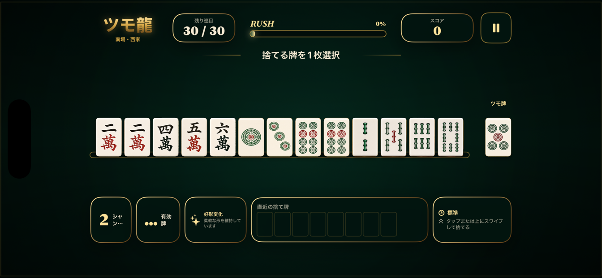

How a game works
Choose one tile to discard, improve shanten and useful tiles, then reach a legal win within 30 turns.
Tsumo Dragon · Player Support
Answers for gameplay, saved games, purchases, audio, and accessibility. Your hand stays yours; we help with everything around it.
QUICK ANSWERS
The most common questions, kept short and practical.
Choose one tile to discard, improve shanten and useful tiles, then reach a legal win within 30 turns.
An active game is saved automatically on this device. Use Continue on the home screen to resume without using another free game.
The first 10 games are complete and free. One non-consumable purchase permanently removes the game limit.

13 + 1
Tsumo Dragon keeps the rules legal and the decisions focused.
Shanten shows distance from tenpai. Useful tiles show how many remaining tiles can improve the hand.
Tap once to select. Tap again or swipe up to discard. The drawn tile remains visually separate from the 13-tile hand.
Efficient choices raise RUSH. Tenpai receives a clear cue, and a winning draw is shown separately before results.
FAQ
Purchase and device questions, without the fine print maze.
Email us with your iPhone model, iOS version, app version, and a short description. Do not include payment card details or Apple ID passwords.